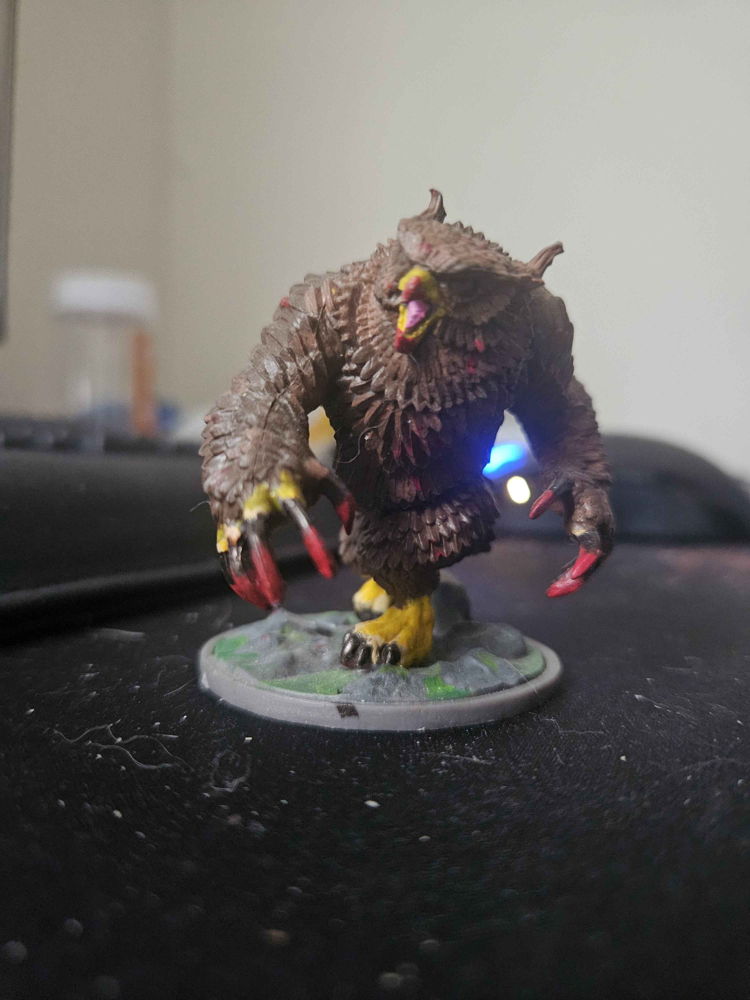

The first image is a my most recent Mini. The second Image is a size comparison between a few different brands of minis. I wanted to use that image because it shows off a few of the different kinds of minis you might see if you were to get into the hobby!


Every miniature presents a new opportunity to practice different painting techniques and color combinations.